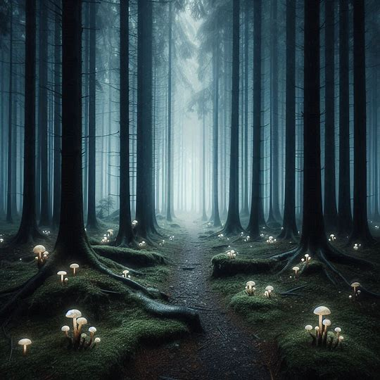
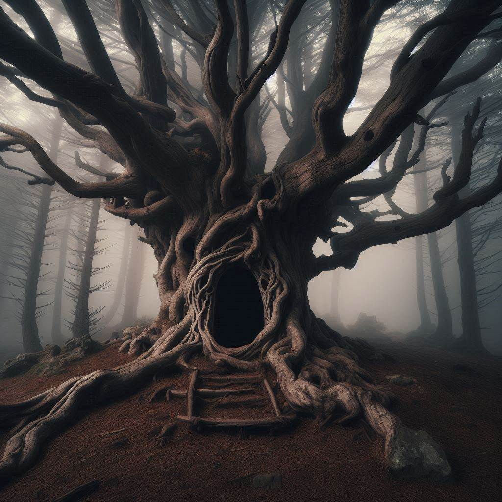
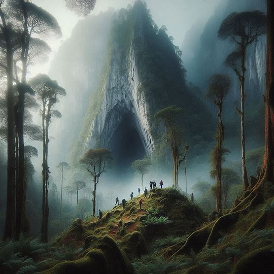
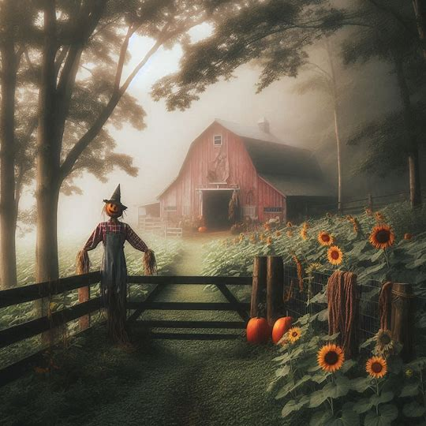

Mysterious Stories Online Bookstore
Enjoy our collection of the most amazing mysterious short stories on the web. Click the each story's link to download it.
The Mysterious Forest
Download Story: The Mysterious Forest
Listen to audiobook: The Mysterious Forest
In a land not so far from here, nestled between rolling hills and a sparkling river, lay the magical forest of Eldoria. This forest was not like any ordinary forest. It was a place where the trees whispered secrets, flowers glowed with inner light, and mythical creatures roamed freely. It was a realm where magic breathed in every leaf, stone, and stream.
The heart of Eldoria was a grand oak known as the Whispering Tree. This ancient tree was said to be as old as time itself and was the keeper of the forest’s wisdom. Its branches stretched high into the sky, and its roots dug deep into the earth, connecting the land to the very essence of magic. The Whispering Tree was a gathering place for all the creatures of the forest, from the smallest pixies to the majestic unicorns.
One sunny morning, a young girl named Elara ventured into Eldoria. She had heard tales of the magical forest from her grandmother, who used to tell her stories of the wondrous creatures and enchantments that lived within. Elara had always dreamed of seeing it for herself, and now, with her grandmother's old map in hand, she set out on her adventure.
As Elara stepped into the forest, she felt a warm, welcoming energy envelop her. The path ahead was lined with flowers that glowed softly, lighting her way. She followed the trail, marveling at the sights and sounds around her. Birds with feathers of every color sang sweet melodies, and butterflies with shimmering wings danced in the air.
After walking for a while, Elara came upon a clearing where a gentle stream flowed. Kneeling by the water, she saw her reflection and noticed something unusual. Her eyes, which had always been brown, now sparkled with a hint of gold. As she stared in wonder, a small creature emerged from the water. It was a water sprite, a delicate being with translucent wings and a mischievous smile.
"Welcome to Eldoria, Elara," the sprite said in a voice like tinkling bells. "The forest has been expecting you."
Elara was taken aback. "How do you know my name?"
"The Whispering Tree knows all who enter this realm," the sprite replied. "It sensed your arrival and sent me to guide you."
Elara felt a thrill of excitement. She followed the sprite deeper into the forest, where the trees grew taller and the magic thicker. They passed through groves of trees with leaves that shimmered like emeralds, crossed bridges made of woven vines, and finally arrived at the Whispering Tree itself.
The grand oak stood tall and majestic, its bark glowing with an ancient light. As Elara approached, she felt a deep connection to the tree, as if it were calling to her. She placed her hand on its trunk and closed her eyes. In that moment, she was filled with visions of the forest’s history and its many secrets. She saw the first sprouting of the Whispering Tree, the arrival of the unicorns, and the birth of the magical flowers that lit her way.
When she opened her eyes, the Whispering Tree spoke to her in a gentle, resonant voice. "Elara, you have a special gift. The magic of Eldoria flows through you. You are destined to be the protector of this forest."
Elara’s heart swelled with pride and responsibility. She vowed to honor the magic of Eldoria and protect its wonders. From that day forward, Elara lived in the forest, learning its secrets and befriending its creatures. She grew to be a wise and kind guardian, and under her care, Eldoria flourished.
The magical forest of Eldoria remained a place of beauty and wonder, protected by the girl who once dreamed of its enchantments. And so, the legacy of the Whispering Tree and the magic of the forest lived on, forever a testament to the power of dreams and the magic that lies within every heart.

Summary:
In a tranquil village surrounded by lush landscapes, lies the Mysterious Forest, a realm of wonder and enchantment. Curious Elara ventures into its depths, guided by whispers and gentle creatures, until she encounters the Whispering Tree, the forest's ancient guardian. Through the tree's revelations, Elara embraces her role as protector, nurturing the forest's magic and ensuring its harmony with nature thrives for generations.
The Mysterious Lake
Download Story: The Mysterious Lake
Once upon a time, in a quaint village surrounded by lush green hills and dense forests, there was a lake that everyone called the Mysterious Lake. The villagers spoke of it in hushed tones, for it was said to hold secrets and magic unlike anything in their everyday lives. The water of the lake shimmered with an otherworldly light, and its depths seemed endless.
One summer, a young boy named Lucas moved to the village with his family. He was an adventurous and curious child who loved exploring new places. The stories of the Mysterious Lake intrigued him, and he decided to see it for himself. His parents warned him to be careful, but they knew he had a good heart and a strong sense of responsibility.
One bright morning, Lucas packed a small bag with some food, a notebook, and a pencil, and set off towards the lake. As he walked through the forest, he marveled at the towering trees and the sound of birds singing high above. The path to the lake was winding and overgrown, but Lucas followed it eagerly.
After a while, he emerged from the forest and saw the lake spread out before him. It was even more beautiful than he had imagined. The water sparkled in the sunlight, casting dancing reflections on the trees around it. Lucas approached the edge and knelt down to touch the water. To his surprise, it was warm, unlike any lake he had ever known.
He took out his notebook and began sketching the scene, capturing the shimmering water and the vibrant colors of the surrounding forest. As he worked, he noticed a ripple in the center of the lake. A moment later, a graceful figure emerged from the water. It was a woman with long, flowing hair that glistened like silver. Her eyes were deep blue, like the lake itself, and she wore a gown made of water that sparkled in the sunlight.
"Hello, Lucas," she said in a melodious voice. "I am Nereida, the guardian of this lake. I have been watching you."
Lucas was astonished. "You know my name?"
Nereida smiled. "Yes, the lake tells me many things. You have a pure heart and a curious mind, and you respect nature. That is why I have revealed myself to you."
Lucas felt honored. "Thank you. This lake is so beautiful and mysterious. Can you tell me more about it?"
Nereida nodded. "This lake is ancient, older than the village itself. It is a source of magic and wonder. The water holds the memories of the land, and it is my duty to protect it. The villagers have forgotten the old ways, but you have the potential to understand."
She beckoned Lucas to step into the water. Hesitant but trusting, he waded in, feeling the warmth surround him. As he did, he saw visions of the lake's past – majestic creatures, grand ceremonies, and the harmony that once existed between the people and nature.
"You have seen the true nature of the lake," Nereida said. "It is important to remember and respect the magic that resides here. You can help remind the villagers of this bond."
Lucas felt a newfound sense of purpose. "I will, Nereida. I promise to protect this lake and share its story with others."
Nereida smiled and placed a small, shimmering stone in Lucas’s hand. "This is a gift from the lake. It will guide you and remind you of your promise."
With that, Nereida slowly sank back into the water, disappearing beneath its shimmering surface. Lucas stepped out of the lake, the stone glowing softly in his hand.
From that day on, Lucas dedicated himself to learning about the lake and teaching the villagers about its magic. He organized clean-up efforts, educated his friends, and even started a small group to protect the natural beauty of the area. The villagers, inspired by Lucas's passion and the tales he shared, began to cherish the Mysterious Lake once more.
The lake thrived, its magic resonating through the village. And Lucas, with the shimmering stone always by his side, grew up to be a wise and respected leader, known for his deep connection to the land and his efforts to protect its wonders. The Mysterious Lake remained a place of beauty and mystery, forever safeguarded by those who understood its true value.

Summary:
In a serene village, nestled by the Mysterious Lake, young Mia embarked on an adventure to unravel its secrets. Guided by Nereida, the lake's water sprite guardian, Mia discovered the lake's ability to reflect memories and its ancient ties to the land. Mia promised to protect and share the lake's enchantment, becoming a steward of its magic and teaching her village to cherish its mystical beauty.
The Mysterious Tree
Download Story: The Mysterious Tree
In a small village nestled in a valley surrounded by towering mountains, there stood a tree unlike any other. It was known as the Mysterious Tree, a grand old oak that reached high into the sky and spread its branches wide, casting a magical aura over the land. The villagers spoke of the tree with reverence, for it was said to hold ancient secrets and powerful magic.
One autumn afternoon, a curious young girl named Mia moved to the village with her family. Mia had always been fascinated by nature and loved climbing trees, exploring forests, and discovering hidden wonders. When she heard the villagers talk about the Mysterious Tree, her curiosity was piqued, and she decided to find it.
Mia's grandmother, who had lived in the village all her life, shared stories of the tree’s magic. "They say the tree has been here for centuries, Mia," she said one evening by the fireplace. "It's said to grant wisdom and sometimes even grant wishes to those pure of heart."
Mia was determined to see it for herself. One crisp morning, she packed a small satchel with some snacks, a notebook, and a pencil, and set off to find the Mysterious Tree. Following her grandmother’s directions, she walked through fields of golden wheat, crossed a bubbling brook, and finally entered the dense forest at the edge of the village.
After a while, Mia noticed a faint glow in the distance. As she got closer, she saw the Mysterious Tree standing tall and majestic in a clearing. Its leaves shimmered with a soft, golden light, and the air around it felt warm and welcoming. Mia felt a thrill of excitement as she approached the tree, her heart pounding with anticipation.
She placed her hand on the rough bark and felt a gentle hum of energy. The tree seemed to be alive, pulsing with a rhythm that resonated with her own heartbeat. She looked up and saw a hollow in the trunk, just big enough for her to climb into. With a mix of bravery and curiosity, Mia hoisted herself up and crawled inside.
To her astonishment, the hollow led to a cozy, hidden room within the tree. The walls were lined with intricate carvings of animals, plants, and symbols she couldn't understand. In the center of the room was a small, glowing orb resting on a pedestal. Mia approached the orb, feeling its warmth and light draw her in.
As she touched the orb, a gentle voice filled the room. "Welcome, Mia. I am the spirit of the Mysterious Tree. You have a pure heart and a curious mind. What is it that you seek?"
Mia took a deep breath and spoke from her heart. "I want to understand the magic of this tree and help protect it. Can you teach me?"
The spirit's voice was warm and kind. "Your wish is noble, Mia. The magic of this tree is ancient and powerful, connected to the very essence of nature. I will share its secrets with you, but you must promise to use this knowledge wisely and to protect the tree and the forest."
Mia nodded eagerly. "I promise."
The spirit then revealed to Mia the history of the tree and its magic. She learned how the tree was a guardian of the forest, nurturing the land and its creatures. It could heal, protect, and even communicate with the animals and plants. The spirit taught her how to listen to the whispers of the leaves, how to sense the energy of the earth, and how to call upon the tree's magic in times of need.
Days turned into weeks as Mia spent time with the Mysterious Tree, learning its secrets and growing closer to the spirit within. She kept her promise and used her newfound knowledge to care for the forest and its inhabitants. She planted new trees, healed injured animals, and helped the villagers understand the importance of respecting and protecting nature.
As the years passed, Mia grew into a wise and kind young woman, known throughout the village as the Guardian of the Mysterious Tree. The forest flourished under her care, and the bond between the villagers and nature grew stronger. The Mysterious Tree continued to stand tall and proud, its magic thriving in the hands of those who cherished it.
And so, the legacy of the Mysterious Tree lived on, a testament to the power of nature and the wisdom of those who choose to protect it.

Summary:
In a village embraced by nature, stands the Mysterious Tree, an ancient oak of legend. Young Lucas, drawn by its mystical reputation, discovers the tree's ability to communicate through shimmering leaves and vivid dreams. Guided by the spirit of Nereida, the tree's guardian, Lucas learns of its role as a protector of nature's balance. Lucas vows to honor and safeguard the tree's magic, becoming a beacon of wisdom and harmony in his community.
The Mysterious Mountain
Download Story: The Mysterious Mountain
In a peaceful village surrounded by rolling hills and emerald forests, there was a towering peak known as the Mysterious Mountain. The villagers often spoke of it in awe and wonder. The mountain was shrouded in mist, and its summit was rarely seen, even on the clearest days. It was said to be a place of great magic and ancient secrets, guarded by mystical creatures.
A young boy named Thomas lived in the village. He was known for his adventurous spirit and insatiable curiosity. From a young age, he had heard tales of the Mysterious Mountain from his grandfather, who would regale him with stories of hidden caves, enchanted creatures, and the legendary treasure said to be hidden at its peak. Thomas dreamed of exploring the mountain and uncovering its secrets.
One bright morning, with the sun shining and a gentle breeze rustling the leaves, Thomas decided it was time to embark on his adventure. He packed a sturdy backpack with food, water, a map, and a journal to record his findings. His grandfather, seeing his determination, handed him an old, worn compass. "This belonged to my father," he said. "It will guide you when the path seems uncertain."
With a hug and words of encouragement from his family, Thomas set off towards the Mysterious Mountain. The journey was not easy; the terrain was rugged, and the path was often obscured by thick foliage and winding trails. But Thomas was undeterred, his excitement and curiosity pushing him forward.
As he climbed higher, the air grew cooler and the mist thicker. He marveled at the beauty around him – vibrant wildflowers, towering trees, and the distant calls of birds. Along the way, he encountered a variety of creatures, some familiar and others more fantastical: a family of deer, a wise old owl, and even a fox with fur that shimmered like silver.
After several days of travel, Thomas reached a plateau where he decided to rest. As he sat by a small, bubbling stream, he heard a soft, melodic voice. Following the sound, he discovered a clearing where a beautiful, ethereal woman stood. Her hair flowed like a waterfall of moonlight, and her eyes sparkled like stars.
"Welcome, Thomas," she said with a warm smile. "I am Seraphina, the guardian of the Mysterious Mountain. I have been watching your journey."
Thomas was astonished. "You know my name?"
"Yes," Seraphina replied. "The mountain has a way of revealing the hearts of those who seek its secrets. You are brave and true, and you have come with pure intentions."
Thomas felt a sense of awe and humility. "I've heard so many stories about this mountain. I want to learn its secrets and share them with the world."
Seraphina nodded. "The mountain holds many secrets, but it also holds great wisdom. Come, I will show you."
She led Thomas to a hidden cave, its entrance covered in vines and moss. Inside, the cave was illuminated by glowing crystals embedded in the walls. The air was filled with a sense of ancient power and tranquility. As they ventured deeper, they reached a grand chamber where a magnificent crystal stood, pulsating with light.
"This is the Heart of the Mountain," Seraphina said. "It is the source of the mountain’s magic. It has the power to heal, to protect, and to guide. But it must be used with wisdom and care."
Thomas felt a deep connection to the crystal, sensing its immense power and the responsibility that came with it. "I promise to protect this place and use its wisdom for good."
Seraphina smiled. "You have a noble heart, Thomas. The mountain has chosen you as its guardian. Share its wisdom, protect its secrets, and ensure that its magic continues to flourish."
With Seraphina's guidance, Thomas spent many days learning about the Heart of the Mountain and the ancient magic it contained. He recorded everything in his journal, determined to preserve the knowledge for future generations.
When Thomas finally returned to the village, he was greeted with joy and curiosity. He shared his stories and the wisdom he had gained, inspiring the villagers to cherish and protect the natural world around them. The Mysterious Mountain remained a place of wonder and magic, its secrets safe in the hands of its new guardian.
And so, Thomas's adventure became a legend in its own right, a story of courage, wisdom, and the enduring magic of the Mysterious Mountain.

Summary:
In a village near the enigmatic Mysterious Mountain, young Thomas set out to uncover its secrets. Guided by Seraphina, the mountain's guardian, he discovered an ancient, magical crystal known as the Heart of the Mountain. Thomas learned that the mountain's magic came from a deep connection to nature and the wisdom it held. Vowing to protect its secrets, Thomas became the mountain's new guardian, sharing its lessons of respect and care for nature with his village.
The Mysterious Farm
Download Story: The Mysterious Farm
In the heart of a picturesque village surrounded by rolling green hills, there was a farm that everyone called the Mysterious Farm. It wasn’t just the lush fields or the bountiful harvests that made it special; it was the enchantment that seemed to linger in the air. Owned by the kindly Mrs. Bloom, the farm produced the juiciest strawberries, the plumpest pumpkins, and flowers that bloomed in colors no one had ever seen before.
A young boy named Ben lived in the village. He was a curious child, always eager to explore and learn new things. He had heard many stories about the Mysterious Farm from the villagers. Some said the crops grew overnight, others whispered about talking animals, and a few even mentioned sightings of magical creatures. Ben's imagination ran wild with the possibilities, and he longed to discover the secrets of the farm for himself.
One crisp spring morning, with the sun shining brightly, Ben decided it was time to visit the Mysterious Farm. He packed a small bag with his favorite sandwich, a notebook, and a pencil, and set off on his adventure. The path to the farm was lined with vibrant wildflowers, their colors seeming more vivid than usual. Birds chirped cheerfully in the trees, and Ben felt a sense of excitement bubbling inside him.
When Ben arrived at the farm, he was greeted by Mrs. Bloom, who was tending to her garden. She was a cheerful woman with twinkling eyes and an infectious smile.
"Good morning, Ben," she said warmly. "What brings you to my farm today?"
"Hello, Mrs. Bloom," Ben replied. "I've heard so many amazing stories about your farm, and I wanted to see it for myself."
Mrs. Bloom chuckled. "Well, you've come to the right place. The farm is always happy to have visitors. Come along, I'll show you around."
As they walked through the farm, Ben marveled at the sight of sunflowers taller than any he had ever seen, vegetables that looked like they belonged in a fairytale, and animals that seemed to understand every word Mrs. Bloom said. There were rabbits with fur that sparkled in the sunlight, chickens that clucked melodiously, and even a cow that appeared to hum as it grazed.
"Mrs. Bloom, how is your farm so magical?" Ben asked, his eyes wide with wonder.
Mrs. Bloom smiled mysteriously. "This farm is special, Ben, because it is nurtured with love, care, and a little bit of magic. But the real magic comes from understanding and respecting nature. Would you like to see something truly special?"
Ben nodded eagerly. Mrs. Bloom led him to a secluded part of the farm where an ancient oak tree stood. Its massive branches stretched out, casting a cool shade. The tree seemed to glow with an inner light, and Ben could feel a gentle hum of energy in the air.
"This tree is the heart of the farm," Mrs. Bloom explained. "It's been here for hundreds of years and is the source of the farm's magic. If you listen closely, you can hear it whispering the secrets of the earth."
Ben placed his hand on the rough bark of the tree and closed his eyes. To his amazement, he felt a warmth spread through him, and he heard soft, melodic whispers telling tales of the farm, the seasons, and the symbiotic relationship between all living things.
When Ben opened his eyes, he felt a deeper understanding and appreciation for the farm and its wonders. "Thank you, Mrs. Bloom. This is incredible."
Mrs. Bloom nodded. "Remember, Ben, the magic of the farm comes from love, respect, and a connection to nature. Share what you've learned with others, and the magic will continue to grow."
Ben spent the rest of the day helping Mrs. Bloom with the farm chores, learning about different plants, and taking notes in his notebook. When the sun began to set, casting a golden glow over the farm, he thanked Mrs. Bloom and promised to return.
As Ben walked back to the village, he felt a sense of joy and purpose. He shared his experiences with his family and friends, inspiring them to appreciate and care for their own gardens and the nature around them.
The Mysterious Farm remained a place of wonder and magic, its secrets protected and its beauty cherished. And Ben grew up to be a wise and kind steward of the land, always remembering the lessons he learned from Mrs. Bloom and the ancient oak tree.
In the village, the story of the Mysterious Farm became a beloved tale, a reminder that the true magic of the world lies in the love and care we give to nature and to each other.

Summary:
In a quaint village, the Mysterious Farm, owned by the kindly Mrs. Bloom, produced extraordinary crops and hosted enchanted animals due to its magical nature. Young Ben, curious about the farm's secrets, visited and discovered its magic stemmed from an ancient oak tree, the heart of the farm. Guided by Mrs. Bloom, Ben learned that the true magic lay in love, care, and respect for nature. Inspired, Ben shared this wisdom with others, ensuring the farm's enchantment would continue to flourish.